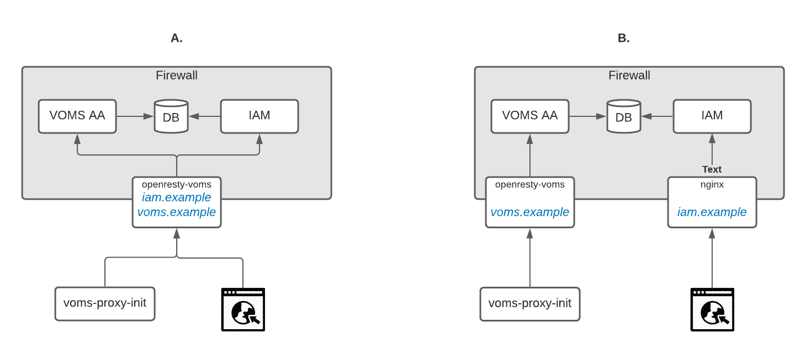

This the multi-page printable view of this section. Click here to print.
IAM service deployment
1 - Backup & Restore
Backup
The IAM data that needs to saved by a backup is:
- database data;
- service configuration, typically maintained in an environment file:
/etc/sysconfig/iam-login-serviceon CentOS,/etc/default/iam-login-serviceon Ubuntuu; - the keystore used to sign JWT tokens:
/var/lib/indigo/iam-login-service/keystore.jks; - the SAML keystore, used when SAML authentication is enabled:
/var/lib/indigo/iam/iam-login-service/example.ks.
The above locations apply when installing from packages on CentOS or Ubuntu.
An example of backup script is given below:
timestamp=`date +'%Y-%m-%d_%H%M%S'`
MYSQL_HOST="mydbhost"
MYSQL_USER="iamloginserviceuser"
MYSQL_PWD="iamloginservicepassword"
MYSQL_DBNAME="iamloginservicedb"
MYSQL_DUMP_OPTS="-u ${MYSQL_USER} -p${MYSQL_PWD} --host ${MYSQL_HOST}"
dumpfile=iam_dump.sql
mysqldump ${MYSQL_DUMP_OPTS} ${MYSQL_DBNAME} > ${dumpfile}
tar czf iam_backup.tar.gz \
${dumpfile} \
/etc/sysconfig/iam-login-service \
/var/lib/indigo/iam-login-service/keystore.jks \
/var/lib/indigo/iam/iam-login-service/example.ks
The keystore paths can be customized, so adapt the backup script according your configuration.
If you are deploying IAM with Docker and use a volume to provide configuration to the service, backup the contents of such volume.
Restore
From the backup, import the database data from the SQL dump:
$ export MYSQL_HOST="mydbhost"
$ export MYSQL_USER="iamloginserviceuser"
$ export MYSQL_PWD="iamloginservicepassword"
$ export MYSQL_DBNAME="iamloginservicedb"
$ mysql --host ${MYSQL_HOST} -u ${MYSQL_USER} -p${MYSQL_PWD} ${MYSQL_DBNAME} < iam_backup/iam_dump.sql
Deployment from packages
To restore the IAM service from scratch, install the package.
On CentOS:
$ sudo yum install -y iam-login-service
Restore the environment file.
On CentOS:
$ sudo cp iam_backup/etc/sysconfig/iam-login-service /etc/sysconfig/iam-login-service
On Ubuntu:
$ sudo cp iam_backup/etc/default/iam-login-service /etc/default/iam-login-service
Copy the keystores in the correct path, according to your configuration:
$ sudo cp iam_backup/var/lib/indigo/iam-login-service/keystore.jks /var/lib/indigo/iam-login-service/keystore.jks
$ sudo cp iam_backup/var/lib/indigo/iam/iam-login-service/example.ks /var/lib/indigo/iam/iam-login-service/example.ks
Ensure the keystores have the right ownership:
$ sudo chown -R iam:iam /var/lib/indigo/iam-login-service
Start the IAM Login Service daemon:
$ sudo systemctl start iam-login-service
Deployment with Docker
Copy the files from the backup to the volume location:
$ cp iam_backup/iam-login-service/env /path/to/iam-login-service/env
$ cp iam_backup/keystore.jks /path/to/keystore.jks
Start the container:
$ docker run \
--name iam-login-service \
--net=iam -p 8080:8080 \
--env-file=/path/to/iam-login-service/env \
-v /path/to/keystore.jks:/keystore.jks:ro \
indigoiam/iam-login-service:latest
2 - Audit log
IAM Login Service traces interesting, security related events with an audit log.
Audit log messages are marked with the tag AUDIT in the Java class name
field.
An example of audit log message is the following:
2017-09-11 09:58:14.560 INFO 13 --- [o-8080-exec-311] AUDIT : {"@type":"IamAuthenticationSuccessEvent","timestamp":1505116694560,"category":"AUTHENTICATION","principal":"794fb313-6e93-4d02-9d0a-4ed773ee2c5e","message":"794fb313-6e93-4d02-9d0a-4ed773ee2c5e authenticated succesfully","sourceEvent":{"principal":"794fb313-6e93-4d02-9d0a-4ed773ee2c5e","type":"InteractiveAuthenticationSuccessEvent"},"source":"UsernamePasswordAuthenticationToken"}
The IAM login service writes logs to standard output in the default configuration. When deployed from packages, all logs are collected by the system journal.
3 - Upgrade
This section provides instructions to upgrade the IAM service to the latest available version.
Deployment from packages
Stop the service:
$ systemctl stop iam-login-service
Update the package:
$ yum update -y iam-login-service
Restart the service:
$ systemctl start iam-login-service
Deployment with Docker
Stop and remove the running container:
$ docker stop iam-login-service
$ docker rm iam-login-service
Pull the latest image:
$ docker pull indigoiam/iam-login-service:latest
Restart the container:
$ docker run \
--name iam-login-service \
--net=iam -p 8080:8080 \
--env-file=/path/to/iam-login-service/env \
-v /path/to/keystore.jks:/keystore.jks:ro \
indigoiam/iam-login-service:latest
Otherwise, you can specify the exact tag version. For example, if the latest
tag is v1.1.0-latest:
$ docker run \
--name iam-login-service \
--net=iam -p 8080:8080 \
--env-file=/path/to/iam-login-service/env \
-v /path/to/keystore.jks:/keystore.jks:ro \
indigoiam/iam-login-service:v1.1.0-latest
4 - Deploying the IAM VOMS attribute authority
The IAM VOMS attribute authority
The IAM VOMS attribute authority (AA) provide backward-compatible VOMS support for a Virtual Organization managed with IAM.
Deployment architecture

The VOMS attribute authority can access the IAM database and encode IAM groups and other attributes in a standard VOMS attribute certificate. This means in practice that IAM can act both as an OAuth/OpenID Connect authorization server and as a VOMS server for a given organization. TLS termination and client VOMS atttribute certificate parsing and validation is delegated to OpenResty VOMS, which can de deployed as a sidecar service that just protects the VOMS AA or also in front of the IAM backend application. The two scenarios are depicted above.
In order to deploy a VOMS attribute authority, you can use the following docker images:
indigoiam/openresty-voms, for the OpenResty VOMS serviceindigoiam/voms-aa:0.7.1, for the VOMS AA service
Deployment from packages is not currently supported for the VOMS attribute authority.
OpenResty VOMS configuration
OpenResty VOMS requires:
- IGTF trust anchors properly configured; see the EGI trust anchors container container
- the
vomsdirfolder, with the VOMS LSC configuration generated starting from the VOMS attribute authority X.509 credential
VOMS LSC configuration
Let’s assume that the IAM VOMS AA will answer on voms.local.io for the VO
example.vo, to generate the LSC you need to get the subject and issuer of the
VOMS AA X.509 credential and put them in a file named as the fully qualified
domain name of the VOMS attribute authority with the .lsc extension.
The following command does exactly that (X509_VOMS_DIR can be set to any
directory where you have writing privileges):
> mkdir -p ${X509_VOMS_DIR}/example.vo
> openssl x509 -in voms_local_io.cert.pem -noout -subject -issuer -nameopt compat | \
gsed -e 's/^subject=//' -e 's/^issuer=//' > \
${X509_VOMS_DIR}/example.vo/voms.local.io.lsc
For an example nginx configuration, see the VOMS AA docker compose file.
VOMS AA configuration
The VOMS AA is a spring boot application that shares the persistence layer implementation with IAM, and as such can inspect the IAM database.
An example configuration for the VOMS AA service is given below, with comments to explain the meaning of the parameters:
server:
address: 0.0.0.0 # bind on all IP addresses
port: 8080 # listen on port 8080
use-forward-headers: true # assume you're behind a reverse proxy
# change the default http header size limit to accomodate VOMS information passed
# down by the ngx-voms server
max-http-header-size: 16000
spring:
main:
banner-mode: "off"
jpa:
open-in-view: true
## Database connection parameters
datasource:
dataSourceClassName: com.mysql.jdbc.jdbc2.optional.MysqlDataSource
url: jdbc:mysql://${IAM_DB_HOST}:${IAM_DB_PORT:3306}/${IAM_DB_NAME}?useLegacyDatetimeCode=false&serverTimezone=UTC&useSSL=false
username: ${IAM_DB_USERNAME}
password: ${IAM_DB_PASSWORD}
flyway:
enabled: false
voms:
tls:
# The VOMS AA certificate
certificate-path: /certs/hostcert.pem
# The VOMS AA certificate key
private-key-path: /certs/hostkey.pem
# Where to look for X.509 trust anchors
trust-anchors-dir: /etc/grid-security/certificates
# How often should trust anchors (and CRLs) be refreshed
trust-anchors-refresh-interval-secs: 14400
aa:
# The VOMS attribute authority host
host: voms.example
# The VOMS attribute authority port. Note that this is the port on
# the reverse proxy, not the local service port
port: 443
# The VOMS VO name
vo-name: ${VOMS_AA_VO}
# Use FQAN legacy encoding, i.e.,
# /voms/Role=NULL/Capability=NULL
# instead of
# /voms
use-legacy-fqan-encoding: true
For an example configuration, see the [VOMS AA docker compose file][voms-aa-compose].